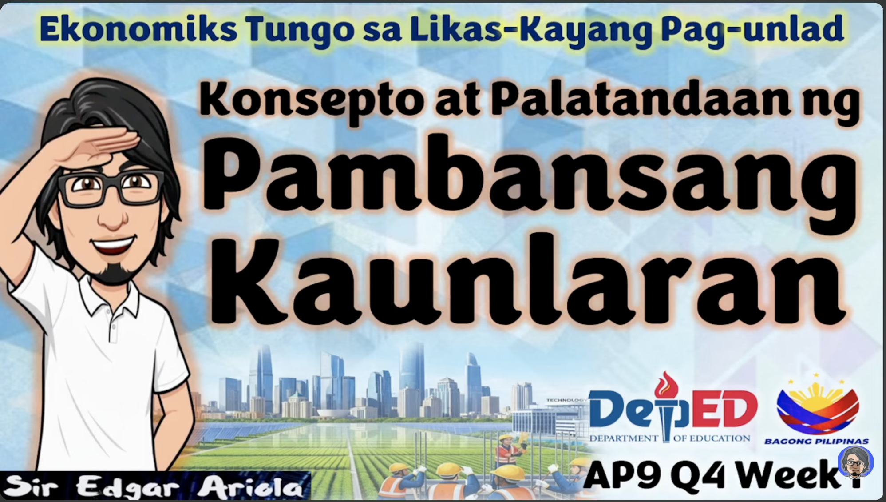
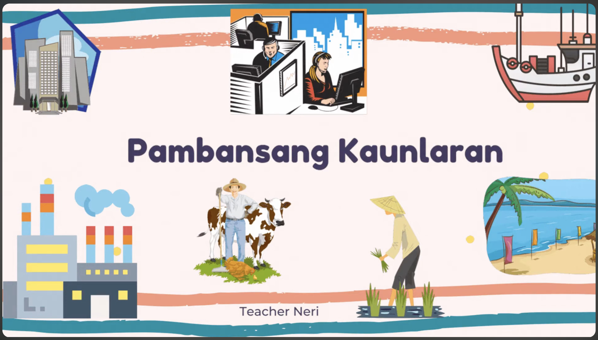
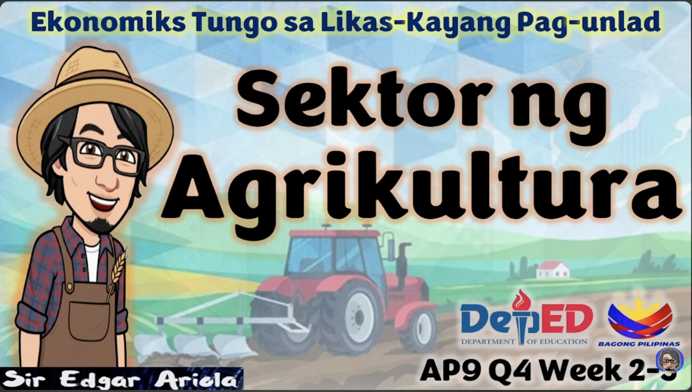
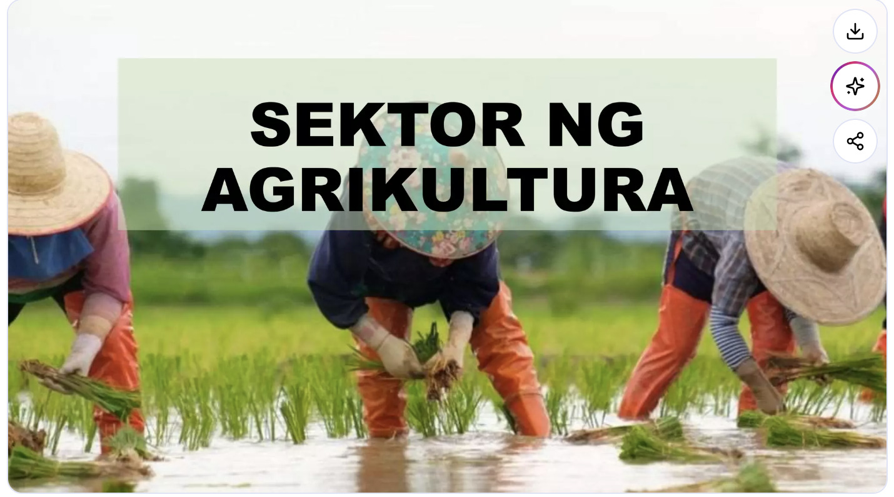
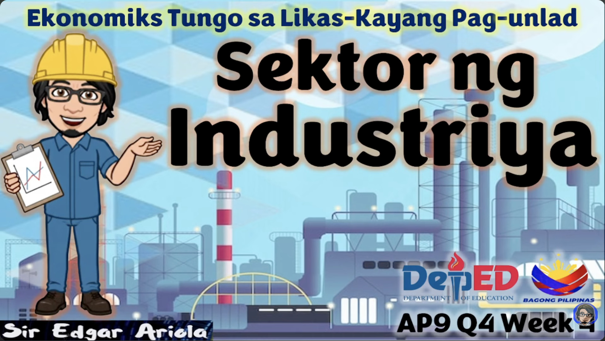
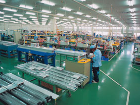
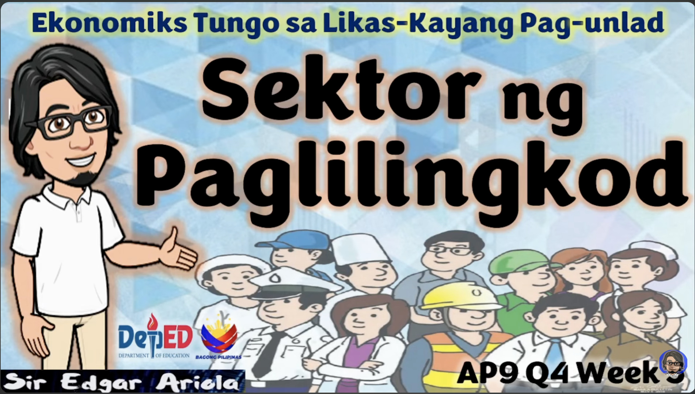
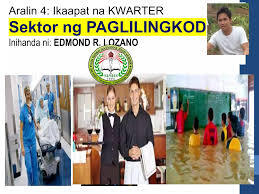
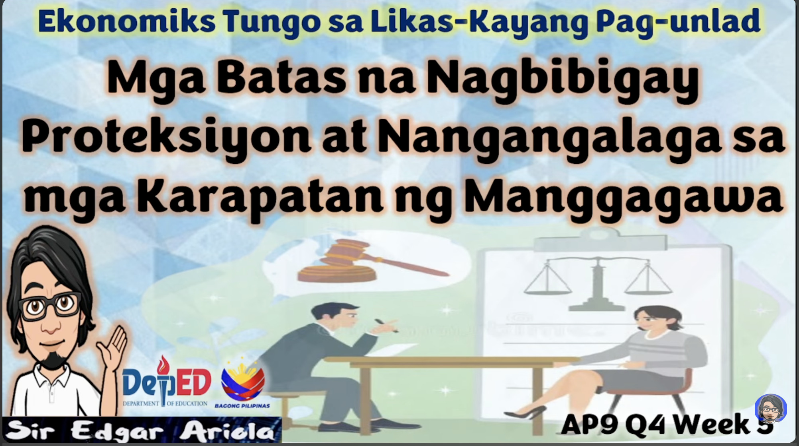

LESSON 1: PAMBANSANG KAUNLARAN
I. KONSEPTO NG KAUNLARAN

1. Kahulugan at Pananaw
Ang Pambansang Kaunlaran ay tumutukoy sa kakayahan ng isang bansa na mapabuti ang aspetong panlipunan, pampolitika, at pang-ekonomiya. Ayon kay Feliciano Fajardo, ito ay isang progresibo at aktibong proseso ng pagpapabuti ng kondisyon ng tao. Hindi lamang ito nasusukat sa paglago ng ekonomiya kundi sa pagbawas ng kahirapan, kawalan ng trabaho, at di-pagkakapantay-pantay sa lipunan.
Para kay Amartya Sen, isang ekonomista at Nobel Prize winner, ang tunay na pag-unlad ay ang pagtatamo ng "yaman ng buhay" sa halip na yaman lamang ng ekonomiya. Binibigyang-diin nito ang pagpapalawak sa kakayahan at kalayaan ng mga tao na piliin ang buhay na nais nilang tamasahin.
2. Pag-unlad vs. Pagsulong
Pag-unlad (Development): Ito ay ang kabuuang pagbabago sa istruktura ng lipunan at gawi ng mga tao. Ito ay isang malawak na konsepto na kinapapalooban ng pagbabago sa antas ng pamumuhay, edukasyon, at kalusugan.
Pagsulong (Growth): Ito ay itinuturing na bunga o produkto ng pag-unlad. Ito ay nasusukat at nakikita nang pisikal, tulad ng pagdami ng mga imprastraktura, gusali, at pagtaas ng Gross Domestic Product (GDP) ng bansa.
II. MGA ANTAS NG KAUNLARAN

1. Klasipikasyon ng mga Bansa
Maunlad na Bansa (Developed Countries): Mga bansang may mataas na antas ng industriyalisasyon, mataas na per capita income, at mataas na Human Development Index (HDI). Halimbawa: Japan, USA, Germany, at South Korea.
Umuunlad na Bansa (Developing Countries): Mga bansang may umuusbong na industriya ngunit umaasa pa rin nang malaki sa sektor ng agrikultura. Halimbawa: Pilipinas, Thailand, at Indonesia.
Papaunlad na Bansa (Underdeveloped Countries): Mga bansang may mababang antas ng teknolohiya, edukasyon, at kalusugan.
LESSON 2: SEKTOR NG AGRIKULTURA
I. ANG AGRIKULTURA

1. Kahulugan at Pinagmulan
Ang Agrikultura ay isang agham at sining na may kinalaman sa pagpaparami ng mga hayop at mga tanim o halaman. Sakop nito ang lahat ng gawaing kinasasangkutan ng pag-aalaga sa kalikasan para sa ikabubuhay ng tao. Nagmula ang salitang ito sa Latin na AGER (Lupa) at CULTURA (Paglilinang).
2. Mga Sangay ng Agrikultura
Pagsasaka (Crops): Nakatuon sa mga pangunahing pananim tulad ng palay, mais, niyog, tubo, saging, at pinya. Noong nakaraang tala, ang kita mula rito ay umabot sa ₱797.731 bilyon.
Pangingisda (Fisheries): Nahahati sa tatlong uri: Komersiyal (pangingisda sa dagat gamit ang malalaking bangka), Munisipal (maliitang pangingisda sa loob ng 15 kilometro mula sa baybayin), at Aquaculture (pag-aalaga at pagpaparami ng isda sa mga fish pond).
Paghahayupan (Livestock): Pag-aalaga ng hayop para sa karne, hibla, gatas, at itlog. Sakop nito ang tamang breeding at pagpapalaki ng mga hayop tulad ng baka, baboy, at manok.
Paggugubat (Forestry): Pinagkukunan ng plywood, tabla, troso, at veneer. Kasama rin dito ang mga produktong hindi kahoy tulad ng rattan, nipa, at kawayan.
II. MGA PATAKARAN AT PROGRAMA

1. Klasipikasyon ng mga Bansa
Land Registration Act ng 1902: Ipinatupad noong panahon ng Amerikano para sa Sistemang Torrens o pagpapatala ng mga titulo ng lupa upang maiwasan ang agawan.
Agricultural Land Reform Code (1963): Nilagdaan ni Diosdado Macapagal noong Agosto 8, 1963, na naglalayong palayain ang mga magsasaka sa sistemang kasama at utang.
Batas Republika Blg. 6657 (CARL 1988): Ang "Comprehensive Agrarian Reform Law" sa ilalim ni Corazon Aquino na naglalayong ipamahagi ang lahat ng lupang agrikultural sa mga magsasakang walang sariling lupa.
1. Batas sa Lupa at Reporma
LESSON 3: SEKTOR NG INDUSTRIYA
I. ANG INDUSTRIYA

1. Klasipikasyon ng mga Bansa
Pagmimina (Mining): Pagkuha at pagproseso ng mga yamang mineral mula sa lupa, tulad ng ginto, nikel, at bakal, upang gawing tapos na produkto.
Pagmamanupaktura (Manufacturing): Dito nagaganap ang pisikal o kemikal na transpormasyon ng mga materyal upang makabuo ng mga bagong kagamitan, sa pamamagitan man ng manual labor o makina.
Konstruksyon (Construction): Pagtatayo ng mga gusali, kalsada, tulay, at iba pang imprastraktura na kailangan para sa serbisyong panlipunan at paglago ng bansa.
Utilities: Pagtugon sa mga pangunahing pangangailangan ng mamamayan tulad ng tubig, kuryente, at gas.
Filipino First Policy: Programang sinimulan ni Carlos P. Garcia na naglalayong bigyan ng higit na malaking partisipasyon ang mga Pilipino sa ekonomiya at negosyo sa bansa.
Oil Deregulation Law (R.A. 8479): Nagbukas ng kompetisyon sa industriya ng langis kung saan ang malayang pamilihan ang nagdidikta sa presyo sa halip na ang pamahalaan.
Retail Trade Liberalization Act (R.A. 8762): Nagpawalang-bisa sa dating R.A. 1180 at binuksan ang sektor ng retail trade sa mga dayuhang mamumuhunan sa ilalim ng mga partikular na kondisyon.
Build-Operate-Transfer (BOT) (R.A. 6957): Isang batas na nagpapahintulot sa pribadong sektor na bumuo ng mga proyekto ng gobyerno gamit ang sarili nilang pondo at patakbuhin ito sa loob ng itinakdang panahon (karaniwang 25 taon).
Ang Industriya ay tumutukoy sa pagproseso ng mga hilaw na materyal at paggawa ng mga produkto na kinakailangan para sa pampublikong pamilihan. Ito ay kilala rin bilang Sekundaryang Sektor. Ang Industriyalisasyon naman ay ang paggamit ng mga makinarya at makabagong kagamitan sa paglinang ng mga industriya upang mapabilis ang produksyon at mapataas ang halaga ng mga likas na yaman.
II. MGA SUB-SEKTOR NG INDUSTRIYA
III. MGA PATAKARANG PANG-EKONOMIYA

LESSON 4: PAGLILINGKOD SA BAYAN
I. KONSEPTO NG PAGLILINGKOD

1. Kahulugan
Ang Paglilingkod sa Bayan ay tumutukoy sa mga gawaing isinasagawa ng isang indibidwal o grupo upang makatulong sa kapwa, sa komunidad, at sa bansa. Ito ay isang responsibilidad ng bawat mamamayan upang mapaunlad ang kapaligiran at lipunan. Sakop nito ang mga programang pampamahalaan, boluntaryong proyekto, at mga gawaing pansibiko.
2. Layunin ng Paglilingkod
Magbigay ng tulong at suporta sa mga nangangailangan.
Palakasin ang pakikipag-ugnayan sa komunidad.
Mapalaganap ang diwa ng responsibilidad at kabayanihan.
Mapabuti ang kalidad ng buhay sa lipunan.
II. MGA ANYO NG PAGLILINGKOD

1. Boluntaryo
Ito ay paglilingkod na kusang-loob, kadalasang isinasagawa sa pamamagitan ng mga NGOs, simbahan, o lokal na komunidad. Halimbawa ay pamimigay ng relief goods, pagtuturo sa mga kabataan, at environmental clean-ups.
2. Pormal na Paglilingkod
Ito ay mga serbisyong ibinibigay sa ilalim ng pamahalaan o mga organisasyon tulad ng barangay health workers, police force, at iba pang ahensiya. Layunin nitong masiguro ang kaayusan, seguridad, at kaunlaran ng komunidad.
3. Impormal / Illegal na Paglilingkod
Ang Impormal o Illegal na Paglilingkod ay mga gawaing pampubliko o pansibiko na isinasagawa sa labas ng batas o walang opisyal na pahintulot. Kadalasan, ito ay ginagawa nang walang regulasyon at maaaring magdulot ng panganib o problema sa komunidad. Bagaman may intensiyon na makatulong, ito ay hindi kinikilala ng pamahalaan at maaring labag sa umiiral na batas.
Vigilantism: Kusang-loob na pagpapatupad ng batas ng isang indibidwal o grupo nang hindi awtorisado, gaya ng pagdakip sa mga nahuling kriminal o pagbibigay ng parusa.
Unofficial Crowdfunding: Pangangalap ng pondo o donasyon para sa proyekto ng komunidad nang walang awtorisadong proseso o regulasyon, na maaaring maloko o maabuso.
Informal Enforcement: Pagpapatupad ng patakaran o regulasyon sa komunidad nang walang legal na kapangyarihan, tulad ng pagpataw ng multa sa mga lumalabag sa lokal na ordinansa.
Unauthorized Volunteer Work: Pagbibigay ng serbisyo o tulong sa kapwa sa paraang hindi sumusunod sa umiiral na batas o pamahalaang regulasyon, na maaaring magdulot ng legal na isyu.
III. MGA PATAKARAN AT BATAS

Republic Act No. 9163 (National Service Training Program Act): Nagbibigay ng programa para sa kabataan upang maisagawa ang Civic Welfare Training Service (CWTS), Literacy Training Service (LTS), at Reserve Officers’ Training Corps (ROTC).
Republic Act No. 10844 (Creation of the Department of Information and Communications Technology): Nagbibigay ng serbisyo sa bayan sa pamamagitan ng makabagong teknolohiya at digital governance.
Barangay Development Plan at Local Government Code (R.A. 7160): Nagtatakda ng mga patakaran kung paano dapat isagawa ang mga proyekto at serbisyo sa lokal na pamahalaan para sa ikabubuti ng komunidad.
Republic Act No. 9003 (Ecological Solid Waste Management Act of 2000): Nagbibigay ng gabay at obligasyon sa bawat mamamayan na tumulong sa wastong pamamahala ng basura at kalikasan.
Republic Act No. 6713 (Code of Conduct and Ethical Standards for Public Officials and Employees): Nagtataguyod ng etika, integridad, at serbisyo para sa publiko sa pamamagitan ng mga kawani ng pamahalaan.